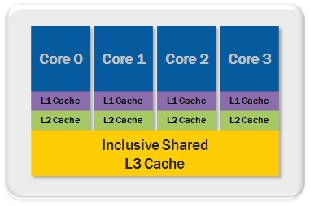

"Big Data" Bioinformatics
Models for Distributed, Parallel and Concurrent Processing
Brian Repko
December 4, 2014
Agenda
- What does this have to do with me?
- High Performance Computing models
- Traditional Software Engineering models
- Distributed Systems Architecture
What does this have to do with me?
- Existing tools designed as single flow / single machine
- Programming languages have limits (R, python)
- CPUs moving to multi-core
- Single flow can't make use of this
- Some processes hit CPU/memory issues
- Data volume in bioinformatics
- 4 "V"s of "Big Data"
- Volume, Velocity, Variety and Veracity
- Limits on single node CPU / memory
Terminology
- Concurrent - dealing with a lot of things
- Parallel - doing a lot of things
- Why parallelize / use concurrency?
- Throughput and Responsiveness
- Distributed - anything non-shared
- Why distribute?
- Scalability and Availability
- Goal is concurrent, distributed, resilient, simple
HPC Models
- Von Neumann Machine
- OpenMP
- MPI
- General Purpose GPU
- Beyond HPC (HTC/MTC)
Von Neumann Machine
- John von Neumann 1945
- CPU, Memory, I/O
- Program AND data in memory
- SISD, SIMD, MIMD models
- Multi-levels/types of cache, UMA/ccNUMA
- Threading, pipelining, vectorization
Von Neumann Machine

OpenMP (Multi-Processing)
- Shared memory programming model
- Based on threads, fork/join and a known "memory model"
- C/C++ pragmas, Fortran compiler directives
- OpenMP directive categories:
- control, work-sharing, data visibility, synchronization and context / environment
- Pros/Cons with use of directives
- Optimizations very architecture-specific
- Can be difficult to get correct
OpenMP (Multi-Processing)
Message Passing Interface
- Distributed memory programming model
- Single-Program Multiple-Data (SPMD)
- P2P and Broadcast, Synch and Asynch
- Datatypes for message content
- Communicators / network topology
- Program instance gets rank / size
- Rank 0 typically a coordinator / reducer
- All others do work and send result to rank 0
- Dynamic process management in MPI-2
- Hybrid models with OpenMP
- Bioinformatics example: Trinity (transcript assembly) on Cray
General Purpose GPU
- OpenCL (computing language)
- CUDA (specific to NVIDIA)
- Standard library and device-specific driver (ICD)
- Kernel routine written in OpenCL C
- Global / Work-group / Work-item memory model
- Devices are sent streams of work-groups
- Kernel runs in parallel on work-items
- Very useful together with OpenGL
- Extension of this idea to custom chips (ASIC/FPGA)
Beyond HPC (HTC/MTC)
- High-Throughput Computing
- Long-running, parallel jobs
- Many-Task Computing
- Mix of job size, Workflows
- Cluster/Grid Computing (Grid Engine)
- Lots of workflow solutions
- YAP (MPI)
- Swift scripting language
- bpipe (workflow DSL)
- celery / gridmap (Python)
- Process-level failure / error handling
Traditional Engineering Models
- Threads, Locks and Fork/Join
- Functional Programming
- Communicating Sequential Processes (CSP)
- Actors
Threads, Locks and Fork/Join
- These are the general terms
- OpenMP is a particular style (via macros)
- Support varies by programming language
- May or may not use multiple cores
- For C, choose OpenMP or pthreads
- Concurrency model (non-deterministic)
- Difficult to get correct
- The problem is shared mutable state
Functional Programming
- Alonzo Church 1930
- Lambda Calculus
- System for maths / computation
- Declarative (vs Imperative)
- Computation is the evalutation of functions
- Avoids mutable state
- Haskell (pure), Lisp (Scheme, Clojure, Common Lisp), Erlang, ML (OCaml), Javascript, C#, F#, Groovy, Scala, Java 8, Python, R, Julia,...
Functional Programming
- First-class functions
- Higher-order functions
- Pure functions (no side effects)
- Referential transparency and beta-reduction in any order including parallel
- (Tail) recursion, partial functions, currying
- Strict (eager) vs non-strict (lazy) evaluation
- Typed or Untyped - Category theory when typed
- Software Transactional Memory (Clojure)
Functional Programming
expr = "28+32+++32++39"
res = 0
for t in expr.split("+"):
if t != "":
res += int(t)
print res
expr = "28+32+++32++39"
print reduce(map(filter(expr.split("+"), isNonBlank), toInteger), add)
Communicating Sequential Processes
- Tony Hoare 1978
- One of multiple process calculi
- Verifiable lack of deadlocks
- Avoids shared state
- Synchronous message passing via shared channels
- Concurrently executing elements - send / receive
- Functions can use and return channels
- Implemented in Ada, Go and Clojure core.async
- Distribution is possible but difficult
Communicating Sequential Processes
Actors
- Carl Hewitt 1973
- Avoids shared state (share nothing!)
- Actor (the processing element) has
- an identity, non-shared state, and a mailbox
- asynchronous messaging
- Actors can
- do work, send messages, and create other actors
- Built-into some programming languages - Erlang, Scala
- Frameworks available for almost all languages - Akka
- Concurrency and (somewhat easier) Distribution
- Bioinformatics example - MetaRay (MPI) to BioSAL/Thorium
Actors

Distributed System Architecture
- Distributed Storage (Filesystems/NoSQL)
- Hadoop
- Map-Reduce
- Apache Spark
- Lambda Architecture
Distributed Storage (FS/NoSQL)
- Filesystems
- Lustre, GlusterFS (Redhat), OneFS (Isilon)
- Hadoop HDFS
- Tachyon
- NoSQL / NewSQL
- Distribution one of the main reasons for NoSQL
- Key-value (Dynamo, Redis, Riak, Voldemort)
- Document (MongoDB, Couchbase)
- Column (Cassandra, Accumulo, HBase, Vertica)
- Graph (Neo4J, Allegro, InfiniteGraph, OrientDB)
- Relational (NuoDB, Teradata)
- These all have to deal with standard distribution problems
Hadoop
- Distributed storage AND computing
- HDFS (file system storage)
- NameNodes and DataNodes
- Map-Reduce (computing model)
- JobTrackers and TaskTrackers
- Hadoop "ecosystem":
- HBase or Parquet (NoSQL DB)
- Pig (Hadoop job DSL / scripting)
- Hadwrap (scripting / workflow)
- Hive (data warehouse)
- Drill or Impala (SQL query engine)
- Sqoop (ETL - DB to Hadoop)
Map-Reduce
- A Map-Reduce job has
- an input data-set and an output directory
- a mapper, reducer and optional combiner (classes)
- all classes get and produce kv-pairs
- The job runs as
- The input is converted to kv-pairs (key=line#, value=text)
- Mapper gets and processes kv-pairs (data locality)
- Sort/Shuffle phase on mapper output
- Reducers get all kv-pairs for a given key (sorted)
- Reducers output is stored in output directory
Map-Reduce
Apache Spark
- New computing model
- RDD - Resilient Distributed Datasets
- Read-only, distributed collection of objects
- Stored on disk (HDFS/Cassandra) or in-memory
- Memory usage on shared clusters can be an issue
- Computation is transformations and actions on RDDs
- Transformations convert data or RDD into an RDD
- Actions convert RDD to object / data
- Functional programming (immutability) paradigm
- DAG (lineage) for how RDD was built (scheduling, failover)
- Lazy evaluation of tasks
- Actor-based (Akka) distribution of code
- Faster than Hadoop, more expressive than MR
Apache Spark
- Sub-projects
- Spark SQL (was "Shark" - Spark for Hive)
- GraphX (graph data)
- MLlib (machine learning)
- Spark Streaming (events)
- Multiple languages - Java 8, Scala, Python, R
- Bioinformatics examples:
- gData Integration and Analytics Layers
- ADAM (AMPlab and bdgenomics.org)
- Why is Bioinformatics a Good Fit for Spark?
- Real-time Image Processing and Analytics using Spark
- Why Apache Spark is a Crossover Hit for Data Scientists
Lambda Architecture
- Slow batch layer for all data (Hadoop)
- Fast speed layer for latest data (updating)
- Serving layer for queries based on both layers
- Raw data is immutable facts (append-only)
What does this have to do with me (again)?
- Bioinformatics has/will have a volume constraint
- Some algorithms have a CPU constraint
- For volume, move to distributed data
- For computation on distributed data
- Parallelize over standard data partitions (position, samples)
- Distribute that computation
- Actors > MPI and Spark > Map-Reduce
- Functional programming as an algorithm goal
- Additional advantages with Apache Spark
- Availability of intermediate processing steps for workflows
- Availability of graph and ML algorithms
Thank You! Questions?
- Special thanks to Ken Robbins, Dave Tester, Steve Litster, Nick Holway, Timothy Danford, Laurent Gautier and Jason Calvert
- OpenMP/MPI/Hadoop/Spark is available in SciComp/DataEng clusters
- What are your data / computation challenges?